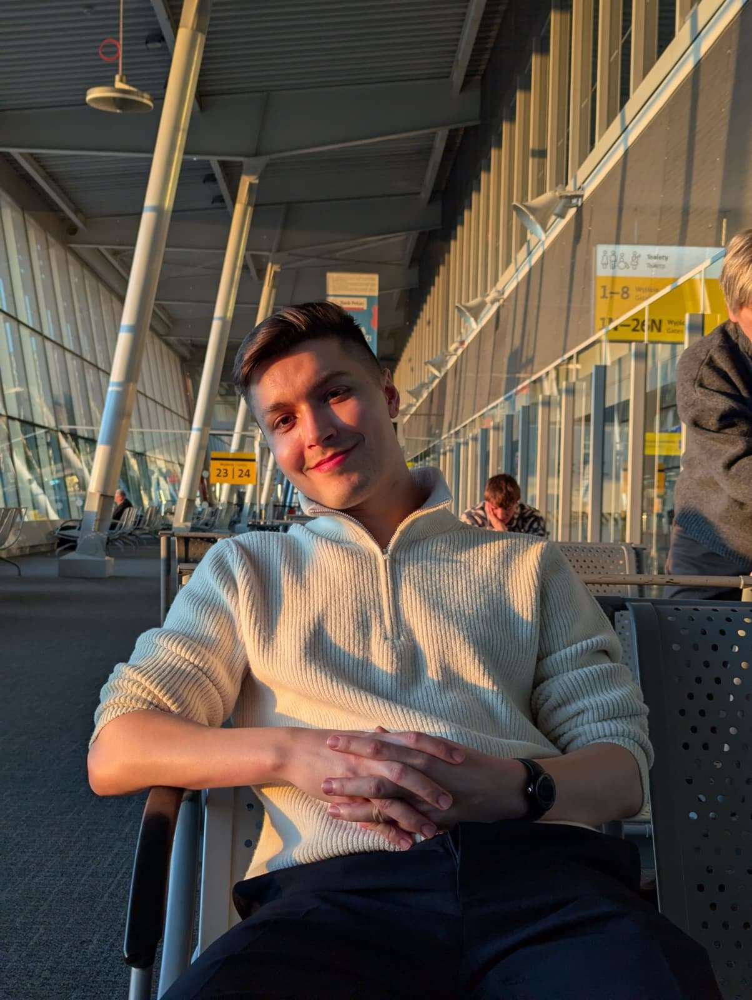

Hunor Gyori
Contact Details

Summary
Technical, detail oriented and reliable.
Over 14+ years experience working in hospitality,manufacturing from dental laboratories to CNC machining.
Currently paint spraying for 3+ years.
OR
Meticulous and technically-minded professional with over 8 years of hands-on experience operating, maintaining, and troubleshooting sophisticated digital manufacturing systems, including SLM 3D printers and CAD/CAM software. Proven ability to follow precise engineering specifications and ensure exceptional quality in high-stakes environments. Now seeking to leverage a strong aptitude for complex systems and a passion for technology to transition into a career in IT/Software Development, bringing a unique perspective on the hardware-software interface and a commitment to quality assurance.
Education
Református Kollégium, Marosvásárhely, Romania
Work Experience
Romania and the United Kingdom
- FINISHING OPERATIVE PAINT SPRAYER.
01/2022 - current
- DIGITAL DENTURES MANUFACTURER.
02/2018 - 01/2022
- LETTINGS ADMINISTRATOR.
07/2017 - 11/2018
- VARIOUS JOBS IN MACHINING, RETAIL AND MANUFACTURING.
04/2013 - 07/2017
Skills
- Techincal Troubleshooting
- Quality Assurance
- Process Optimization
- CAD/CAM Software
- System Maintenance
- Client Communication
- Technical Aptitude & Working with Complex Systems
Experience Gained:
- Operating Digital Manufacturing Hardware (3D Printers): "3D Selective Laser Melting - running, operation and maintenance of multiple machines." This is not simple machine operation; SLM printers are complex systems that require calibration, monitoring, and an understanding of digital-to-physical workflows.
- Using Specialized Software (CAD/CAM): "E-Max ceramics CAD/CAM order nesting." This demonstrates direct experience with Computer-Aided Design and Computer-Aided Manufacturing software. "Nesting" is an optimization process, showing an understanding of efficiency and resource management within a software environment.
- System Maintenance and Upkeep: "SLM & E-Max machines upkeep and maintenance." This is equivalent to IT hardware support—diagnosing issues, performing routine checks, and ensuring systems are operational. This is a core skill for roles in IT support, DevOps, or systems administration.
- Process, Precision, and Workflow Management
Experience Gained:
- Following Technical Specifications: "Masking and unmasking components instructed by an engineer drawing." This is analogous to a developer taking a technical specification or a user story and implementing it exactly as required.
- Adherence to Complex Procedures: The entire paint spraying role (polyurethane topcoats, lacquers, primers, etc.) involves multi-step processes where the order and method of application are critical to the final product's success. This mirrors following a deployment pipeline or a testing protocol.
- Order Fulfillment: "Order fulfillment and quality check" shows an understanding of the entire lifecycle of a task, from receiving a request (the order) to delivering a finished, verified product. This is the essence of a development sprint or a support ticket lifecycle.
- Attention to Detail & Quality Assurance (QA)
Experience Gained:
- Meticulous Inspection: "Quality check" is mentioned in two different high-stakes manufacturing roles. The candidate is trained to spot imperfections and ensure the final product meets exacting standards. This is a perfect foundation for a QA Engineer, Tester, or a developer who writes clean, bug-free code.
- Working with Intricate Components: "Paint spraying of complex components" and "Metal finishing" on dental units requires a high degree of precision and focus. One small mistake could ruin the entire piece. This is the same mindset required when debugging complex code or configuring a sensitive server.
- Problem-Solving and Troubleshooting
Experience Gained:
- Hardware Troubleshooting: "machines upkeep and maintenance" implies identifying and resolving issues with the 3D printers and CNC machines. Did a job fail? Was there a material clog? This is hands-on troubleshooting.
- Client and Service Coordination: As a Lettings Administrator, "Arranging for maintenance to be carried out, liaising with landlords" is a form of incident management. It involves identifying a problem (e.g., a tenant reports a leak), assessing the situation, and coordinating resources (plumbers, landlords) to resolve it. This is directly comparable to a helpdesk or IT support role.
- Communication and Client-Facing Skills
Experience Gained:
- Client Communication: "Taking phone calls and satisfying customer requests," "Advising clients about the letting process." This shows the ability to explain complex processes to non-technical individuals.
- Stakeholder Management: "Liaising with landlords" demonstrates the ability to manage expectations and communicate between different parties to achieve a goal. This is crucial when working with project managers, clients, and other developers.
- Multilingualism: Being fluent in three languages (Hungarian, English, Romanian) is a significant cognitive asset, demonstrating an ability to learn complex rule-based systems (like languages) and to communicate effectively with diverse teams.
Contact Details
Hobbies